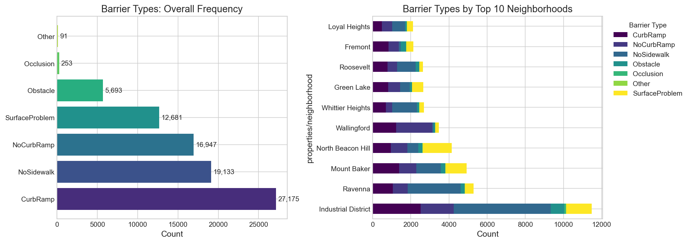
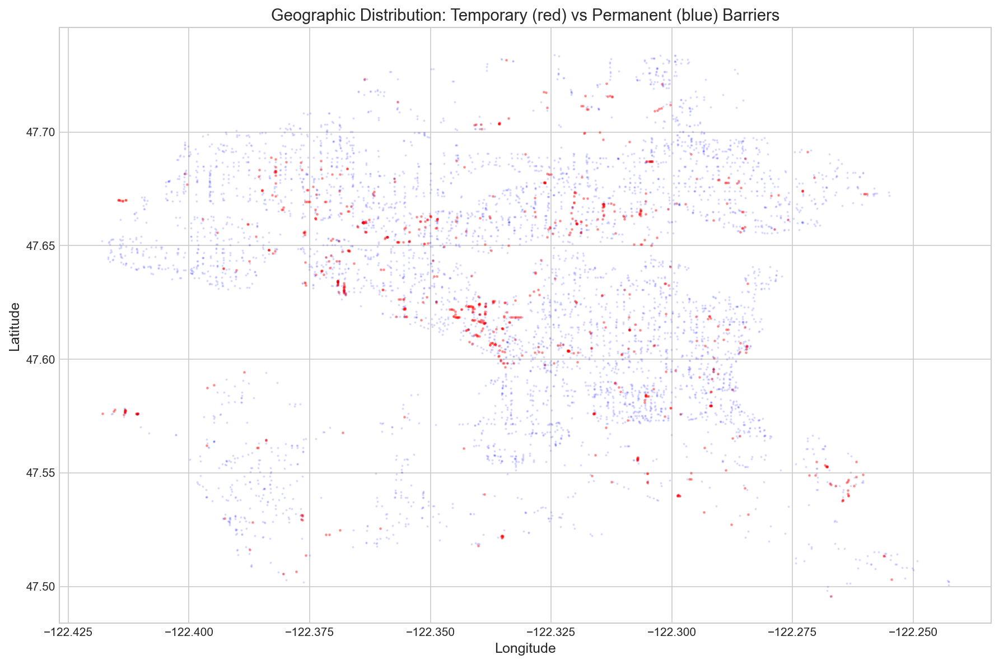
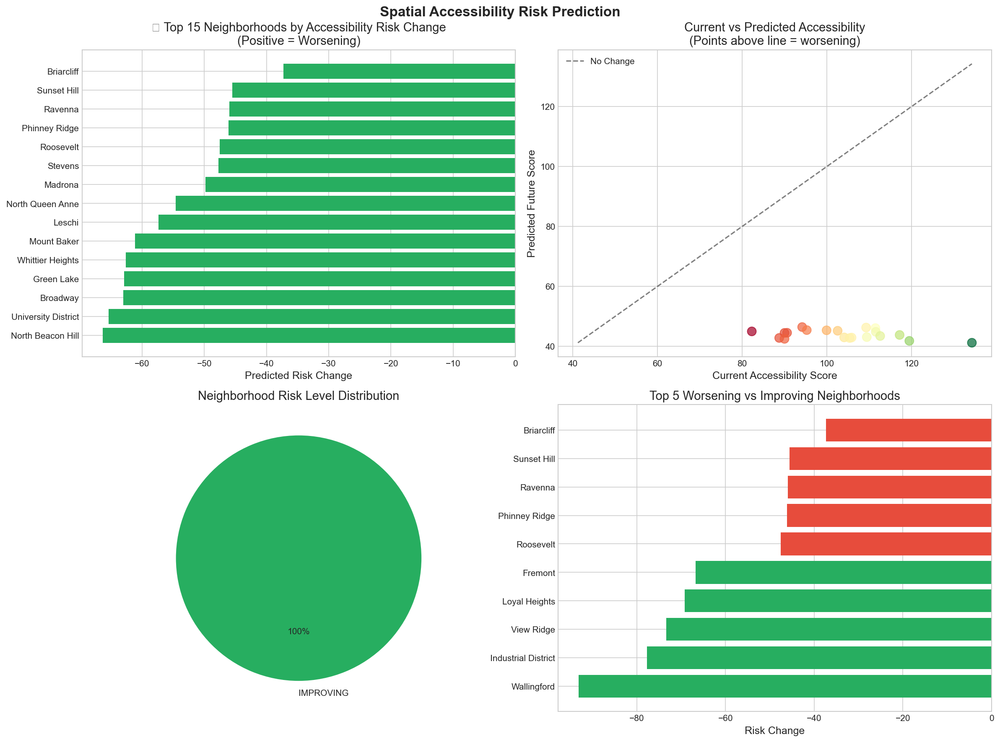
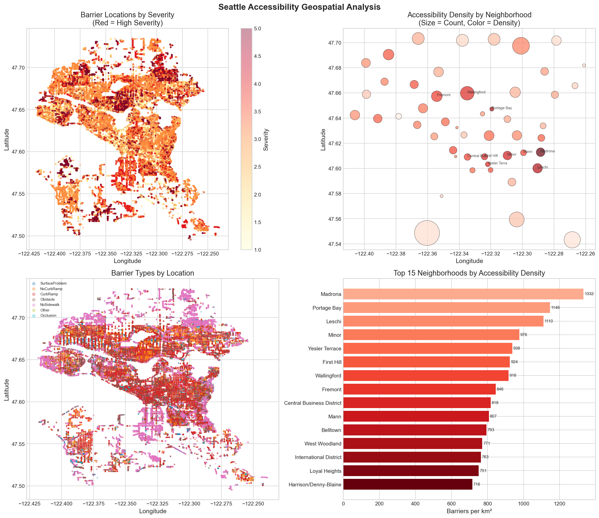
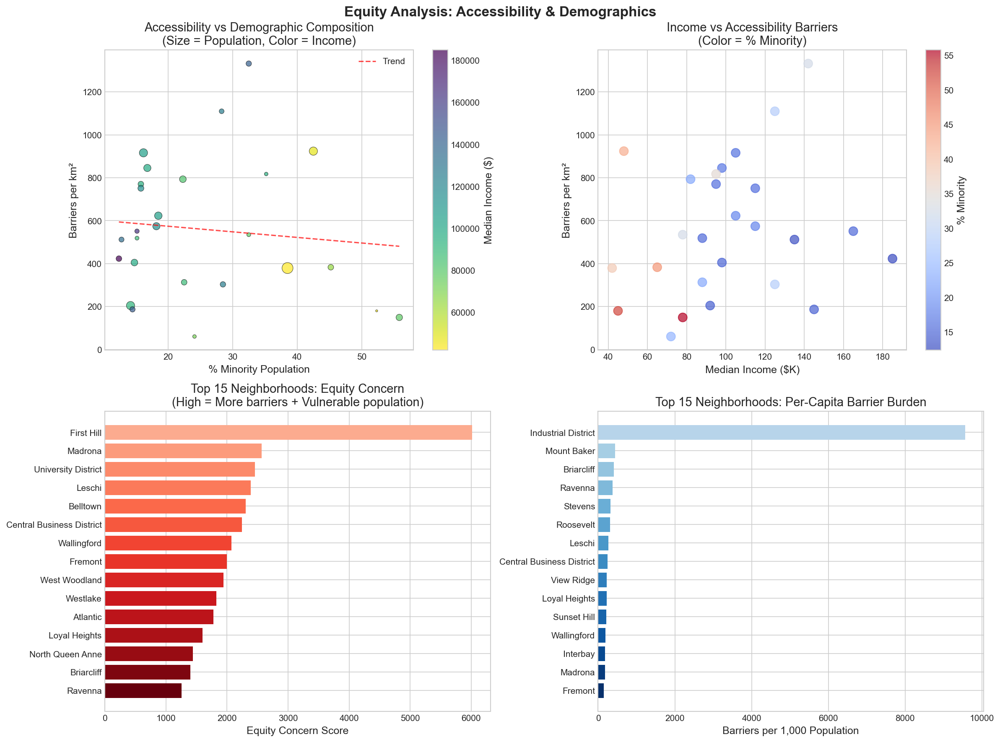
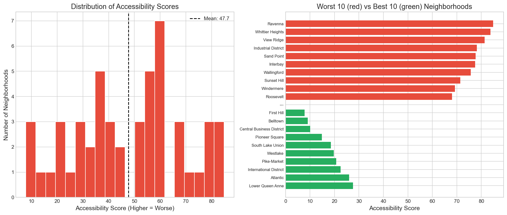
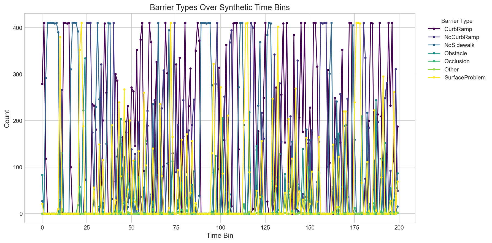
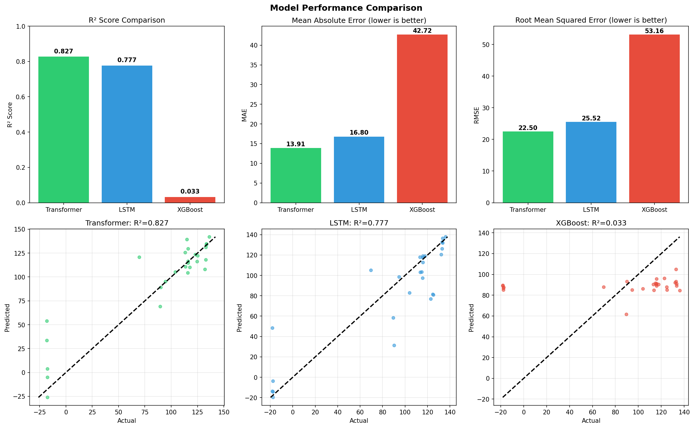

Project Summary
This dashboard presents an analysis of Seattle's sidewalk accessibility barriers using transformer-based temporal forecasting. The model achieves an R² of 0.8372 on the test set, higher than LSTM (0.7893) and XGBoost (0.1008) baselines. Important limitation: The dataset lacks true timestamps; synthetic time bins were created from `attribute_id` ordering as a temporal proxy, which may not reflect actual temporal dynamics.
Key Features
- Block-wise Analysis: ~500m grid cells for granular predictions
- Temporal Forecasting: Multi-step predictions for accessibility trends
- Geospatial Analysis: Interactive heatmaps and hotspot identification
- Equity Assessment: Demographic correlation with accessibility


Interactive Accessibility Map
Explore barrier locations, grid cell density, and risk levels across Seattle. Use the layer controls above to switch views.
Block-wise Risk Analysis
Grid cells (~500m) with risk levels based on barrier density and severity.
Top High-Risk Grid Cells
| Cell ID | Neighborhood | Barriers | Avg Severity | Dominant Type | Risk |
|---|
Neighborhood Risk Forecasts
Multi-step predictions (3 steps ahead) from Transformer model (R²=0.8372 on test set). Predictions are based on synthetic time bins (derived from attribute_id ordering), not true temporal data. Threshold accuracy of 55.56% (±15 points) indicates trend-level rather than point-prediction accuracy.
| Neighborhood | Barriers | Avg Severity | Current Score | Predicted | Change | Risk |
|---|

Geospatial & Equity Analysis
Understanding the relationship between demographics and accessibility barriers.




Model Performance Comparison
Model comparison on test set. Transformer shows higher R² than LSTM and XGBoost. The improvement over LSTM is modest (~6% relative improvement in R²). XGBoost's poor performance (R² = 0.10) suggests it struggles with temporal structure. All models evaluated on same temporal train/test split to preserve temporal structure.
| Model | MAE | R² Score | Pct Accuracy | Hit Rate (±15) |
|---|---|---|---|---|
| Transformer | 18.08 | 0.8028 | 56.86% | 59.26% |
| BiLSTM | 21.12 | 0.7212 | 50.92% | 55.56% |
| XGBoost | 40.27 | 0.1157 | -22.72% | 3.70% |

Feature Engineering: Temporal Forecasting
To enable temporal forecasting, we constructed a multivariate time-series dataset from barrier reports. The dataset uses synthetic time bins (derived from `attribute_id` ordering) as a temporal proxy, since true timestamps are unavailable. This limitation should be considered when interpreting results. The pipeline transforms raw barrier reports into a structured format suitable for sequence modeling:
Temporal Lags ($t-n$)
Captured historical states for barrier_count, severity, and accessibility_score across 1, 2, and 3-step intervals to identify neighborhood trends.
Rolling Statistics
Calculated 3 and 5-period moving averages to smooth out noise and identify sustained shifts in urban mobility.
Cyclical Time Encoding
Applied Sine and Cosine transformations to normalized time bins. This allows the model to understand periodic patterns by representing time as a continuous circle rather than a linear scale.
Spatio-Temporal Fusion
Merged historical barrier data with demographic "equity scores" (income, population, etc.) to analyze how accessibility degrades over time in vulnerable areas.
Architecture Details
Transformer Config
- d_model: 192
- Heads: 12
- Layers: 6
- Features: 72
- Sequence: 5 steps
- Horizon: 3 steps
Training Configuration
- Cosine warmup scheduler
- Huber loss function
- Data augmentation
- CLS token pooling
- Pre-LayerNorm
- Xavier initialization
Limitations & Constraints
Data Limitations: (1) The dataset lacks true timestamps; synthetic time bins were created from `attribute_id` ordering as a temporal proxy. This may not reflect actual temporal dynamics and limits the model's ability to capture real-world temporal patterns. (2) The dataset is crowdsourced, which may introduce reporting biases (e.g., certain neighborhoods may be over-reported) that affect generalizability.
Evaluation Constraints: (1) Model evaluated on a single temporal train/test split (not random, to preserve temporal structure). Cross-validation would provide more robust performance estimates but was not feasible within the 24-hour datathon constraint. (2) Feature importance analysis was not conducted; the contribution of individual features (lags, rolling stats, cyclical encoding) to model performance is unknown.
Model Limitations: (1) The 55.56% threshold accuracy (±15 points) indicates trend-level rather than point-prediction accuracy. The model is better suited for identifying neighborhoods at risk than exact score prediction. (2) Multi-step forecasting (3 steps ahead) accumulates error; longer horizons would likely show degraded performance. (3) The model architecture (6 layers, 12 heads) was selected empirically; systematic hyperparameter search was not conducted due to time constraints.